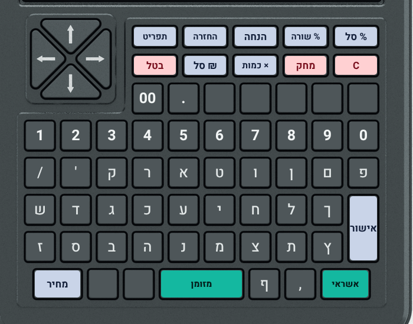

לתלות ליד הקופה. מקשים כתובים כך: אישור. מה שמסומן 🔒 מבקש קוד מנהל.

| פעולות (תכלת) | תפריט החזרה הנחה % שורה % סל ₪ סל × כמות מחיר אישור |
| תשלום (ירוק) | מזומן (המקש הרחב) · אשראי |
| ביטול (ורוד) | בטל כל העסקה · מחק שורה · C מה שהוקלד |
| מספרים | 0–9 · 00 · . · חצים ▲▼ לבחירת שורה |
| אותיות | לא בשימוש בקופה |
הסכום במזומן מעוגל ל-10 אגורות (כמו בכל חנות). כתוב "חסרים ₪…" — הלקוח לא נתן מספיק, אין קבלה.
הקופה רק רושמת שזה שולם באשראי. היא לא מחויבת לחיוב עצמו.
רוצים רק לראות כמה נכנס, בלי לסגור? תפריט ← 1 (דוח ביניים X).
בטל ← בטל שוב לאישור. הביטול נרשם בדוח היום — זה בסדר.
אם כבר יצאה קבלה — זה לא ביטול, זו החזרה (בצד השני).
הקופה לא תחזיר פריט שלא נקנה בקבלה הזו, או יותר ממה שנקנה, ומחזירה במחיר ששולם בפועל (אחרי הנחות).
תפריט ואז מספר (רק כשאין עסקה פתוחה):
| 1 | דוח ביניים (X) — כמה נכנס עד עכשיו |
| 2 🔒 | סגירת יום (Z) |
| 3 | דוח מלאי |
| 4 | העתק של הקבלה האחרונה (כתוב עליו "העתק") |
| 5 🔒 | פתיחת מגירה בלי מכירה (נרשם) |
| 6 🔒 | כיוון שעון |
| 7 🔒 | החלפת קוד מנהל |
C = יציאה מהתפריט.
אחרי הפסקת חשמל הקופה עשויה לבקש את זה לבד — אז חובה להקליד תאריך ושעה נכונים (גם אם מה שמוצג נכון). אי אפשר לכוון לתאריך שלפני הקבלה האחרונה.
| "אין כרטיס בקופה" | מכניסים את הכרטיס עד הסוף. |
| "⛔ … פגום" | מפסיקים ומתקשרים לספק. לא מוחקים ולא שומרים עליו כלום. |
| "⛔ הכרטיס נפסל" | מפסיקים למכור ומתקשרים לספק. לא מוחקים ולא מתקנים כלום בכרטיס. כנראה שינו קובץ במחשב, או שזה כרטיס של קופה אחרת. |
| "⛔ השמירה לכרטיס נכשלה" | המכירה לא נרשמה ולא יצאה קבלה. מוציאים, מכניסים שוב, ומנסים שוב. ממשיך? כרטיס מלא או פגום — לספק. |
| "צריך לסגור את היום הקודם" | סגירת יום (סעיף 6), ואז ממשיכים. |
| "קוד מנהל שגוי" / "נעול עד…" | מנסים שוב. אחרי 5 טעויות — נעול ל-5 דקות. לא זוכרים — לבעל העסק. |
| "מוצר לא נמצא" | מוכרים כ"מחיר חופשי" (מחיר ← מחיר), ומבקשים מהבעלים להוסיף את המוצר. |
| "אזהרה: במלאי X בלבד" | רק אזהרה — המכירה ממשיכה. לעדכן את הבעלים. |
| "… — בטוח?" | הקלדתם מחיר מעל ₪5,000 או כמות מעל 50. נכון? אישור. טעות? C. |
| הקבלה לא יוצאת | בודקים נייר (גליל 80 מ"מ) ושהמכסה סגור. צריך שוב את הקבלה? תפריט ← 4. |